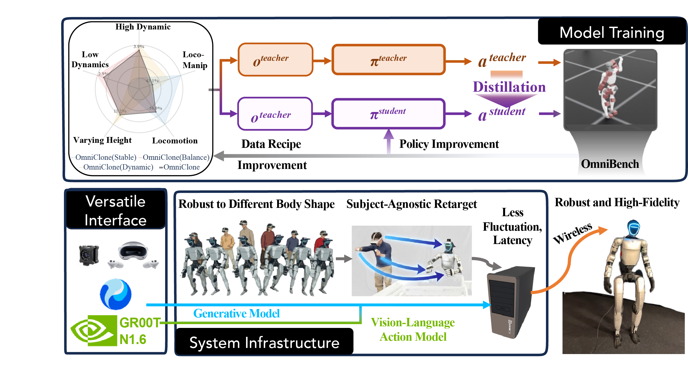

Utilizing a systematic perspective to develop an affordable, robust, and versatile whole-body teleoperation system.
Benchmarking with OmniBench
We leverage OmniBench—the first comprehensive diagnostic benchmark—to systematically evaluate humanoid whole-body teleoperation systems and provide actionable insights for policy optimization.
Bias Identification & Optimization
We identify and mitigate system biases introduced by retargeting and hardware fluctuations, resulting in a refined, high-stability teleoperation framework.
Robust Teleoperation System
We introduce a Transformer-based model integrated with these optimizations, providing a robust, affordable, and easily reproducible system for high-fidelity humanoid control.
Robust Deployment Across Diverse Human Body Shapes
OmniClone enables stable, whole-body teleoperation across a wide range of operator heights, from 147cm to 194cm.
High-Fidelity Long-Horizon Teleoperation
Demonstrating high-fidelity dextrous manipulation across long-term interactions and different household settings.
Autonomy Policy Trained via OmniClone Demonstrations
Generating high-quality expert trajectories for autonomy policy training (e.g., Gr00T N1.6) using only 50-demonstrations.
Zero-Shot Motion Play
Enabling zero-shot execution of diverse motions generated by HY-Motion, demonstrating a system robust to any interface.
Benchmark
OmniBench: Systematic diagnostics and actionable insights for humanoid whole-body teleoperation.

Outer rim indicates lower tracking errors

System Illustration
Optimized Whole-Body Teleoperation Infrastructure: Integrating a High-Fidelity Transformer-Based Control Model.

Citation
@article{li2026omniclone,
title={OmniClone: Engineering a Robust, All-Rounder Whole-Body Humanoid Teleoperation System},
author={Li, Yixuan and Ma, Le and Lin, Yutang and Du, Yushi and Liu, Mengya and Hu, Kaizhe and Cui, Jieming and Zhu, Yixin and Liang, Wei and Jia, Baoxiong and Huang, Siyuan},
journal={arXiv preprint},
year={2026}
}